Real window capture
PipeWire and the desktop portal hand over a single application window, not a cropped monitor. Niri, KDE Plasma, GNOME, and Hyprland each have a working path.
The recording HUD
capture pending

Early alphaRecords a window or a monitor on Wayland, then lets you retime every move without touching the take.
The editor, one zoom marker selected
capture pending
PipeWire and the desktop portal hand over a single application window, not a cropped monitor. Niri, KDE Plasma, GNOME, and Hyprland each have a working path.
The recording HUD
capture pending
You mark the interesting moment while it is still interesting, instead of hunting for it in a timeline afterwards.
Nothing is baked in. Every zoom keeps its own timing, position, and scale, and the recording underneath is left alone until you export.
Pick a window or a monitor, choose 60, 120, or 180 FPS, and start. The HUD hides itself before capture begins, so it never lands in the video.
The editor opens on the take. Retime and resize each zoom, trim the ends, set the scene and background, adjust the cursor, and balance the two audio channels.
Render the timeline to MP4 at the quality profile you picked and save it wherever you want it.
This is the first public alpha. The recording and editing pipeline is usable every day. Packaging and compositor coverage are not finished.